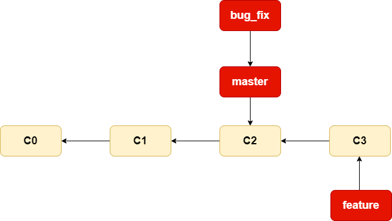
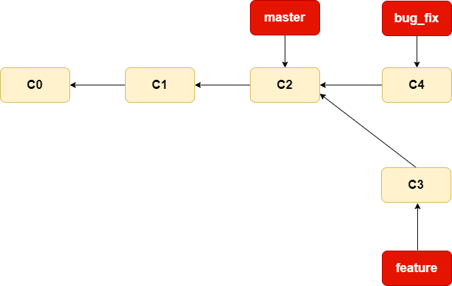
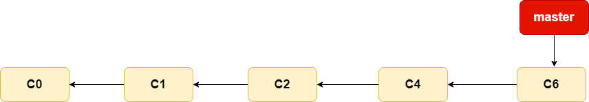
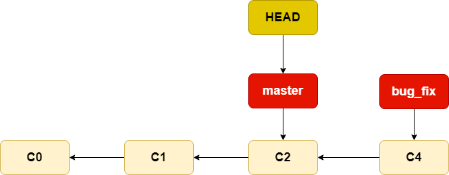
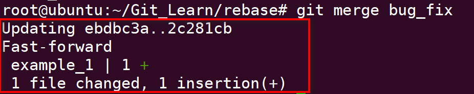
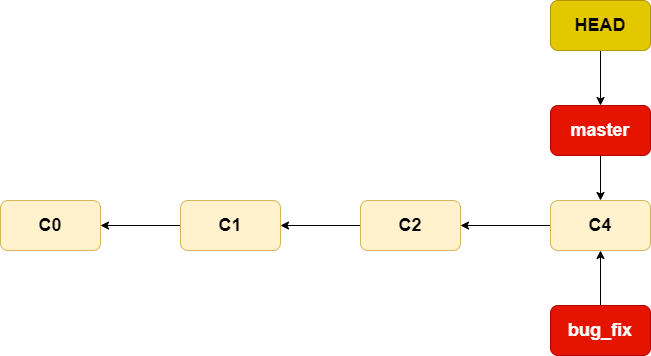
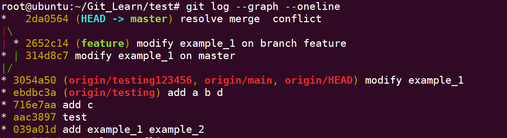
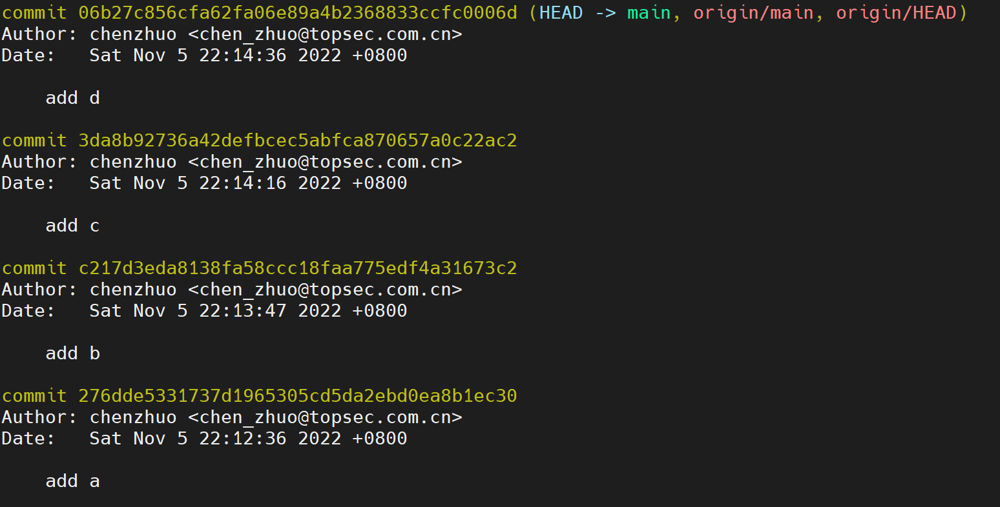
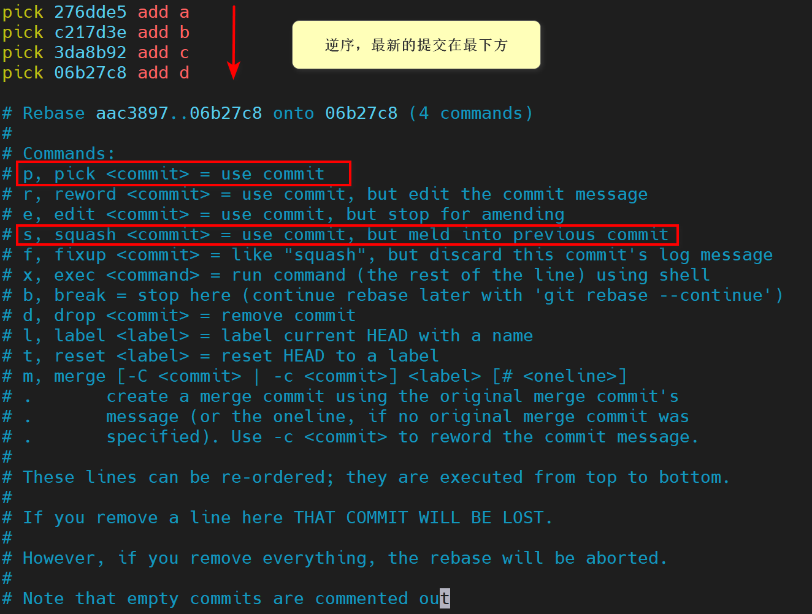
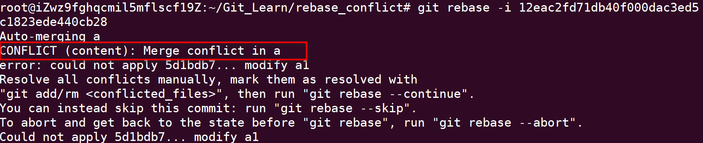

Git基础 s
《协同开发培训 - Git》
[toc]
1 版本控制
什么是版本控制系统?
版本控制是一套系统，该系统按时间顺序记录某一个或者一系类文件的变更，让你可以查看其以前的特定版本。
本地版本控制
 记录文件的每次更新，可以对每个版本做一个快照，或是记录补丁文件。
缺点:
- 只能在本地使用，且所有的数据都在本地，有很大的丢失风险。
记录文件的每次更新，可以对每个版本做一个快照，或是记录补丁文件。
缺点:
- 只能在本地使用，且所有的数据都在本地，有很大的丢失风险。
集中式版本控制
 包含一个服务器和多个客户端，多个客户端可以从服务器拉取文件。
优点: 解决了本地版本控制系统不能多人协作的问题
缺点:
- 所有的数据都在服务器中，若服务器宕机，则不能查协作或提交更改
- 有数据丢失风险
包含一个服务器和多个客户端，多个客户端可以从服务器拉取文件。
优点: 解决了本地版本控制系统不能多人协作的问题
缺点:
- 所有的数据都在服务器中，若服务器宕机，则不能查协作或提交更改
- 有数据丢失风险
分布式版本控制
 对于一个分布式版本控制系统来说，客户端并非仅仅是检出文件的最新快照，而是对代码仓库(repository)进行完整的镜像。这样一来，不管是那个服务器故障，任何一个客户端都可以使用自己的本地镜像来恢复服务器，每一次检出操作实际上都是对数据的一次完整备份。
对于一个分布式版本控制系统来说，客户端并非仅仅是检出文件的最新快照，而是对代码仓库(repository)进行完整的镜像。这样一来，不管是那个服务器故障，任何一个客户端都可以使用自己的本地镜像来恢复服务器，每一次检出操作实际上都是对数据的一次完整备份。
2 Git基础使用
2.1 Git项目中的三大区域 (重要)
工作目录(Workspace)
暂存区 (Staging Area)
Git目录(仓库)(Repository) /rɪˈpɒzət(ə)ri/
 - 工作目录: 对项目的某个版本独立提取出来的内容，如项目的源代码。
- 暂存区: 保存了下次将提交的文件列表信息。
- Git仓库: Git用来保存项目元数据和对象数据库的地方，这是Git中最重要的部分。
- 工作目录: 对项目的某个版本独立提取出来的内容，如项目的源代码。
- 暂存区: 保存了下次将提交的文件列表信息。
- Git仓库: Git用来保存项目元数据和对象数据库的地方，这是Git中最重要的部分。
2.2 Git文件的状态 (重要)
- 未跟踪(Untracked)
- 已跟踪(tracked)
- 未修改(Unmodified)
- 已修改(Modified)
- 已暂存(Staged)
注意: 各种状态都是相对于Git仓库而言的

工作目录下的每一个文件都不外乎这两种状态: 已跟踪或未跟踪。已跟踪的文件是指那些被纳入了版本控制的文件，在上一次快照中有它们的记录，在工作一段时间后，它们的状态可能处于未修改，已修改或已放入暂存区。 工作目录中除已跟踪文件以外的所有文件都属于未跟踪文件，它们既不存在于上次快照的记录中，也没有放入暂存区。初次克隆某个仓库的时候，工作目录中的所有文件都属于已跟踪文件，并处于未修改状态。 编辑过某些文件之后，由于自上次提交后对它们做了修改，Git将它们标记为已修改文件。我们逐步将这些修改过的文件放入暂存区，然后提交所有暂存了的修改，如此反复。
2.3 开发中Git的工作流程
 基本的Git工作流如下:
1. 在工作目录中修改文件
2. 暂存文件，将文件的快照放入暂存区域
3. 提交更新，找到暂存区域的文件，将快照永久性存储到Git仓库目录。
基本的Git工作流如下:
1. 在工作目录中修改文件
2. 暂存文件，将文件的快照放入暂存区域
3. 提交更新，找到暂存区域的文件，将快照永久性存储到Git仓库目录。
2.4 Git的安装及首次配置
2.4.1 Git的安装
安装方法: - Windows 使用安装包安装 - Linux/Unix的安装教程: https://git-scm.com/download/linux - Mac OS的安装教程: https://git-scm.com/download/mac
2.4.2 Git的首次配置
-
设置用户名 git config --global user.name \<name>
git config --global user.name chenzhuo
-
设置用户邮箱 git config --global user.email \<email>
git config --global user.email chen_zhuo@topsec.com.cn
-
提交模板 git config --global commit.template xxx
git config --global commit.template E:\topsec.template
-
检查配置
git config --global --list
-
删除全局配置 git config --global --unset xxx
例如: git config --global --unset user.name
2.5 Git仓库的创建(gitea)
-
创建远程仓库 供测试使用的Gitea地址: https://gitea.peerblack.cn
git remote add [url] git push -u origin master
-
在现有目录中初始化Git仓库
touch README.md git init git add README.md git commit -m 'first commit'
-
克隆仓库 git clone [url]
2.6 查看当前文件状态
git status 示例如下:
git status

vi example_1 在example_1文件中加入内容 git status

2.7 跟踪新文件
git add
git add example_1 git status

2.8 暂存已修改的文件
git status
git add
vi example_1 示例: 使一个文件同时处于暂存和非暂存两种状态

2.9 查看已暂存和未暂存的变更
git status
2.10 查看变更的具体内容
- git diff 用来查看未暂存的修改
- git diff --cached 用来查看已暂存的修改

2.10 提交变更
- 不使用提交模板(仅演示用，日常开发不推荐) git commit -m 'xxx'
git commit -m 'modify example_1'

- 使用提交模板(推荐的方式) git commit 会去调用之前已经设置好的提交模板


2.11 查看提交历史
- git log 默认不加参数的情况下，git log会按照时间顺序列出仓库中的所有提交，其中最新的提交显示在最前面。和每个提交一同列出的还有它的SHA-1校验和、作者的姓名和邮箱、提交日期以及提交信息。

- git log -p -n -p选项，会显示出每次提交所引入的差异 -n选项，只输出最近的第n次提交
例
git log -p -2

git log --oneline
--online选项 在浏览大量提交时，oneline选项很有用，它可以在每一行中显示一个提交。
git log --oneline --graph <==> gitk
--graph选项 在多分支里面可以轻易的观察到分支的变化情况
2.12 查看某一次提交的内容
git show SHA-1
2.13 移除文件
要从Git中移除某个文件，需要把它先从已跟踪文件列表中移除(确切的说，是从暂存区中移除)，然后再提交。git rm会帮你完成这些操作，另外该命令还会把文件从工作目录中移除，这样你在下一次就不会在未跟踪文件列表中看到这些文件了。
- git rm -- 从工作目录中移除
- 直接使用rm
rm
git add
git commit
- 使用git rm
git rm
git commit
git rm <==> mv + git add
- git rm -f -- 从暂存区中移除
如果已经把某个文件加入了暂存区，要想让git移除它就必须使用-f选项强制移除。这是为了防止没有被记录到快照中的数据被意外移除而设立的安全特性，因为这样的数据被意外移除后无法由Git恢复。
- git rm --cached -- 把文件保留在工作区，但从暂存区中移除该文件 即让文件任然保留在硬盘中，但不想让Git对其进行跟踪管理。

2.14 移动文件
git mv
例，把README.md 改名为README
git mv README.md README

2.15 Git别名
git config --global alias.short_name full_name 例: 1. git st > git config --global alias.st status > git st

-
git unstage > git config --global alias.unstage 'reset --hard' git unstage <==> git reset --hard

-
删除别名 > git config --global --unset alias.st
2.16 远程仓库的使用
2.16.1 创建本地远程仓库
创建如下的目录结构
 其中，
Git_Remote: 为本地远程仓库
Local_one 和 Local_two，用于模拟多用户操作
其中，
Git_Remote: 为本地远程仓库
Local_one 和 Local_two，用于模拟多用户操作
-
在 Git_Remote 中
git init 进入 .git/hooks目录 将post-update.sample 文件 改名为 post-update
-
在 post-update中，
unset GIT_DIR cd .. git reset --hard

好了，至此本地远程仓库创建完毕。
2.16.2 远程仓库的使用
- 显示远程仓库
- git remote 列出每个远程仓库的简短名称
- git remote -v 会显示出Git存储的每个远程仓库对应的URL
- 添加远程仓库 git remote add [shortname] [url]

-
从远程仓库拉取数据 git pull [remote-name] [branch-name] 或者 git fetch [remote-name] [branch-name] + git merge [remote-name]/[branch-name]
-
将数据推送到远程仓库 git push [remote-name] [branch-name]
例，

git config --global receive.denyCurrentBranch ignore

2.16.3 冲突的处理
- 制造冲突
- 第一步，在Local_two中修改某一文件
- 第二步，提交并推送到远程仓库
- 第三步，在Local_one中对同一文件进行修改并提交
- 第四步，从远程仓库拉取更新
例， Local_two
vi example_1 git add example_1 git commit -m 'modify example_1 -- user2' git push origin master
Local_one
vi example_1 git add example_1 git commit -m 'modify example_2 -- user1' git fetch origin master git merge origin/master - 解决冲突


解决完冲突后 git add example_1 git commit -m 'resolve conflict' 冲突解决完毕
2.16.4 删除和重命名远程仓库
(都是本地操作) - 检查远程仓库 git remote show [remote-name] - 重命名远程仓库 git remote rename [origin-name] [new-name] 删除远程仓库 git remote rm [remote-name]

3 Git分支
3.1 分支简述
分支意味着偏离开发主线并继续你自己的工作而不影响主线开发

3.2 Git和SVN比较
Git 创建分支是新建指向某次提交的指针，而SVN新建分支则是拷贝目录，这个特性使得Git的分支切换非常迅速，且成本低
3.3 分支操作
3.3.1 查看分支
- git branch
查看所有本地分支
其中星号显示的是当前所在的分支

- git branch -r
查看所有远程分支

- git branch -a
查看所有本地分支和远程分支

- git branch -v
简要的显示SHA-1检验和 以及 提交信息

3.3.2 创建分支
- git branch \<branch-name>
HEAD: 指向当前所在分支的指针
新建分支前:

新建testing分支:
git branch testing
新建分支后:

3.3.3 切换分支
- git checkout \<branch-name>
切换至testing分支
git checkout testing

3.3.4 创建并切换分支
- git checkout -b [branch-name]
git checkout -b 等价于 git branch + git checkout
3.3.5 重命名本地分支
- git branch -m
3.3.6 删除本地分支
- git branch -d \<branch-name>
3.4 基本的分支与合并操作
一个简单的分支与合并案例，其工作流可供日常开发借鉴
1. 在项目展开工作
2. 为新需求创建feature分支
3. 在feature分支上展开工作
这时，突然有一个紧急的bug需要立即修复，随后需要这样做:
1. 切换到生产环境(master分支)
2. 创建bug_fix分支来进行此次问题的修复工作
3. 待测试通过后，合并修补分支并推送到环境中(master分支)
4. 切换回之前的feature分支上继续新需求开发工作
3.4.1 实际案例
-
初始状态

-
step1 - 为新需求创建
feature分支并进行开发git checkout -b feature 或者 git branch feature git checkout feature

- step2 - 在feature上进行新需求开发工作，并进行提交

- step3 - 有一个紧急bug需要立即修复
- 切换回
master分支 - 创建
bug_fix分支，展开bug修复工作git checkout master git branch bug_fix git checkout bug_fix
- 切换回

- step4 - 修复完成后，并进行提交

- step5 - 将
bug_fix分支合并到master分支 > git checkout master > git merge bug_fix

- step6 - 删除
bug_fix分支 > git branch -d bug_fix

- step7 - 切换回
feature分支,继续之前未完成的需求

- step8 - 新需求开发完毕，将新需求合并到
master分支 重点: 三方合并，以共同祖先C2为基础节点


- step9 - 删除
feature分支 > git branch -d feature

3.5 上述案例中涉及到的重要知识点
3.5.1 合并分支操作
- git merge \<branch-name>
例，将分支B合并到分支A的步骤:
先分支B切换到分支A git checkout A 在分支A上执行git merge命令 git merge B
3.5.2 分支合并的两种模式
- 方式一: 快进合并(fast-forward)
合并前 
由于当前所在的master分支所指向的提交是要并入bug_fix分支的直接上游，因而Git会将master分支指针向前移动。换句话说，当你试图去合并两个不同的提交，而顺着其中一个提交历史可以直接到达另一个提交时，Git会简化合并操作，直接把分支指针向前移动，因为这种单线历史不存在有分歧的工作，这就叫做fast-forword

合并后

- 方式二: 三方合并
这次合并看起来与之前bug_fix的合并有点不一样。在这次合并中，开发历史从某个早先的时间点开始有了分叉。由于当前master分支指向的提交并不是feature分支的直接祖先，因而Git必须要做一些额外，即 三方合并。三方合并操作会使用两个待合并分支上最新提交的快照，以及这两个分支的共同祖先的提交快照。
与之前简单的向前移动分支指针的做法不同，这一次Git会基于三方合并的结果创建新的快照，然后再创建一个提交指向新建的快照。这个提交叫做合并提交。合并提交的特殊性在于它拥有不止一个父提交。值得注意的是，Git会自己判断最优的共同祖先并将其作为合并基础。
3.5.3 合并冲突的解决
在三方合并的过程中不可避免的会遇到冲突等问题。
下面介绍一下遇到冲突了该如何解决:


手动解决冲突, 然后 git add 告诉Git冲突已经解决, 最后git commit 即可。
使用git log --graph --oneline 查看提交历史，可以以图形化的方式查看到分叉，以及三方合并的过程

3.6 查看已合并以及未合并分支
-
查看哪些分支已经并入当前分支 git branch --merged
-
查看包含尚未合并工作的所有分支 git branch --no-merged
3.7 远程分支
3.7.1 远程分支介绍
远程分支是指向远程仓库的分支的指针，这些指针存在于本地且无法移动。当你与服务器进行任何网络通信时，它们会自动更新。远程分支有点像书签，它们会提示你上一次连接服务器时远程仓库中每个分支的位置。 远程分支的表示形式为: \<remote-name>/\<branch-name>
3.7.2 跟踪/不跟踪远程分支
- 创建新的分支跟踪远程分支
-
新建同名分支跟踪远程分支 git checkout --track \<remote-name>/\<branch-name>
-
新建任意名称分支跟踪远程分支 git checkout -b branch-name \<remote-name>/\<branch-name>
-
使已存在分支跟踪/不跟踪远程分支
- 跟踪远程分支 git branch -u \<remote-name>/\<branch-name> 或者 git branch --set-upstream-to \<remote-name>/\<branch-name>
例，使当前分支跟踪远程的master分支
git branch -u origin/master
- 取消跟踪 git branch --unset-upstream
例，取消跟踪远程master分支
git branch --unset-upstream
- 查看具体跟踪的分支 git branch -vv
3.7.3 git pull 与 远程分支
-
没有跟踪分支时
-
git pull \<remote> \
-
git pull \
-
已经跟踪分支时 git pull
3.7.4 git push 与远程分支
- 没有跟踪分支时
-
git push \<remote> \<local-branch>:\<remote-branch> 将本地local-branch分支的数据推送到远程的remote-branch分支
-
git push \
- 已经跟踪分支时 git push
-
3.7.5 删除远程分支
- 通过Web
- 通过命令行
- git push \<remote> :\<remote-branch>
- git push --delete \<remote> \<remote-branch>
- git push \<remote> --delete \<remote-branch>
例，删除远程origin仓库的testing分支
git push origin :testing
git push --delete origin testing git push origin --delete testing
3.7.6 重命名远程分支
- 在本地以旧分支为基础创建新分支
- 推送到远程仓库
- 删除远程分支
例，将远程的test分支重命名为test1
git push origin test:test1 git push origin :test
遗留问题
1. git commit --amend操作，时间是否会改变?
git commit --amend
撤销上一次的提交，（撤销提交内容 或者 撤销提交描述）
注: 时间不会变，但是 commit id 会改变

git commit --amend

2. 合并非连续提交?
git rebase 变基 git rebase -i
- 合并非连续提交之前 创建 4 个文件 vi a git add a git commit -m 'add a' ...

-
合并 a b d 三次提交至一个新的提交 合并前的流程图
 合并后的流程图
合并后的流程图

-
git rebase -i 父提交 注意: 如果你想改变最近4次或其中任意一次的提交消息，需要将待修改的最近一次提交的父提交作为参数提供给git rebase -i，我们将1之前的提交的commit id提供给git rebase -i

注意: 显示的提交为倒序，旧的提交在上方，新的提交在下方。 格式: 关键字 commit-id commit-message
几个重要的关键字如下所示:
p, pick
= use commit r, reword = use commit, but edit the commit message e, edit = use commit, but stop for amending s, squash = use commit, but meld into previous commit These lines can be re-ordered; they are executed from top to bottom. If you remove a line here THAT COMMIT WILL BE LOST.
选择要保留和要合并的commit

保存并退出

修改提交message

合并完成后

注意: 提交时间不变，但是commit-id会全部改变
- 如果遇到冲突后该如何解决?
 第一步，解决冲突 第二步，git add xxx 第三步，继续rebase , 执行 git rebase --continue ... 如果想放弃，可使用 git rebase --abort 或者 git rebase --skip
- 推送到远程分支?

需要 git push -f 才行 （非常不推荐rebase非本地分支的内容） git push -f [remote] [branch]
3. 如何合并中间的某几个节点?
方法同上
4. 如何从提交log中进行关键字查找?
- 查找关键字 git log --grep key_word
- 查找关键字，并指定作者 git log --grep key_word --author author

git log 常用扩展
- 查找指定函数的变更记录
git log -L :\
例，寻找main.cpp文件中 add 函数的变更记录
git log -L :add:main.cpp